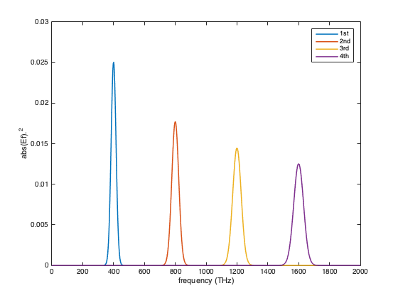
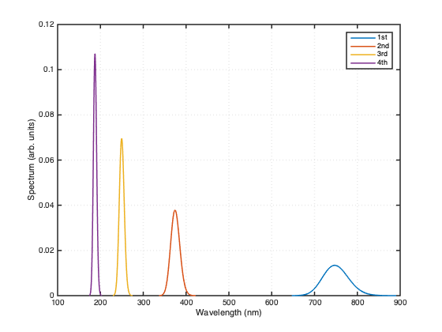

Example of calculation of harmonics
Contents
New pulse in time domain
n = 2^12; dt = 0.2; s = 10; t0 = 10; f0 = 0.4; % pulse parameters % time array t = (-n/2:n/2-1).' * dt; % electric field Et = exp(-(t-t0).^2/s^2 -2i*pi*t*f0); % LaserPulse object p1 = LaserPulse(t, 'fs', Et); p1.frequencyUnits = 'THz'; p1.normalize()
Calculate harmonics
The power operator works, by default, on the time dimension. This allows calculating harmonics using a short notation:
pshg = p1.^2;
pthg = p1.^3;
pfhg = p1.^4;
% Normalized the pulses to make it easier to plot them on the same scale.
normalize(pshg); normalize(pthg); normalize(pfhg);
Plot harmonics
The following figure displays the spectral intensity of the harmonics, in function of frequency.
figure(); plot(p1.frequencyArray,p1.spectralIntensity, ... pshg.frequencyArray,pshg.spectralIntensity, ... pthg.frequencyArray,pthg.spectralIntensity, ... pfhg.frequencyArray,pfhg.spectralIntensity, ... 'LineWidth', 1.5); xlabel(['frequency (', p1.frequencyUnits, ')']); ylabel('abs(Ef).^2'); axis([0 2000 0 0.03]) legend('1st','2nd','3rd', '4th');
The following figure displays the spectra, in function of wavelength.
p1.plotSpectrum; hold on pshg.plotSpectrum(gcf); pthg.plotSpectrum(gcf); pfhg.plotSpectrum(gcf); hold off legend('1st','2nd','3rd', '4th');